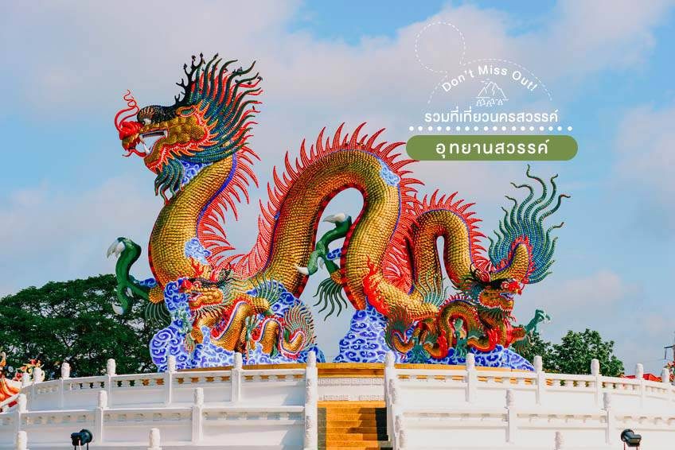
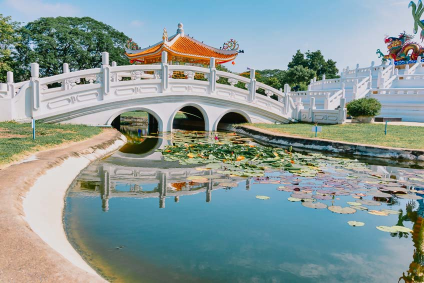
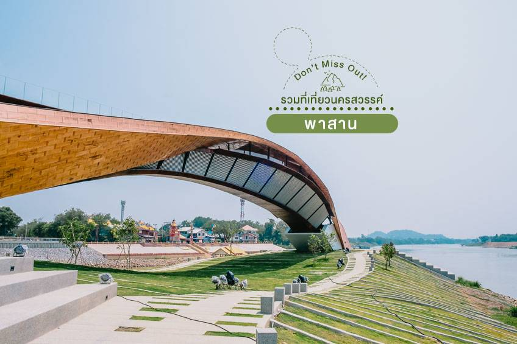
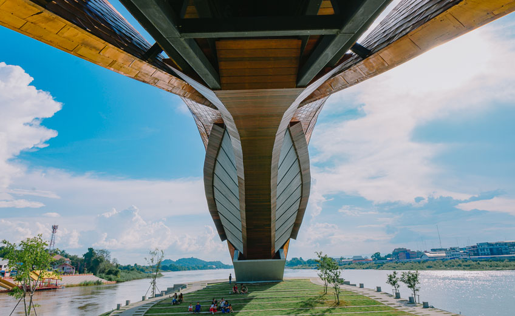
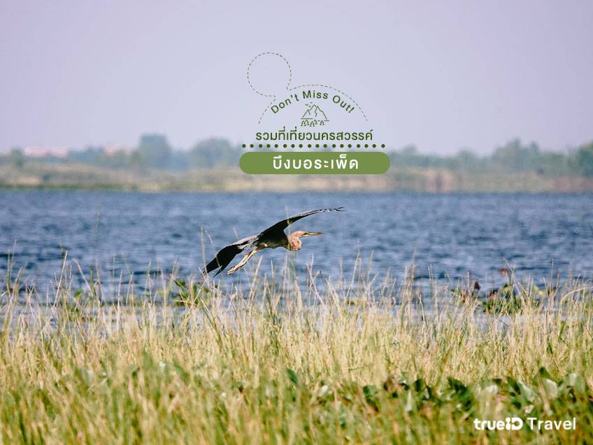
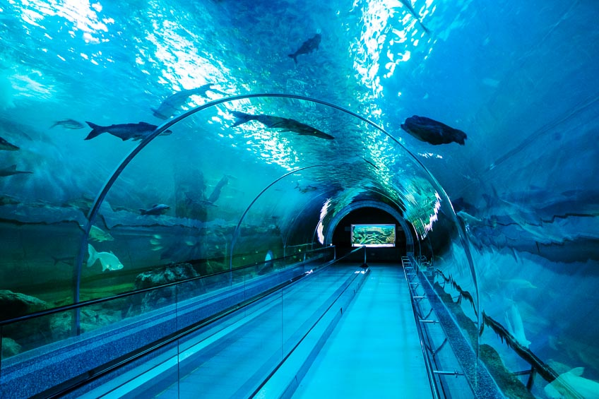
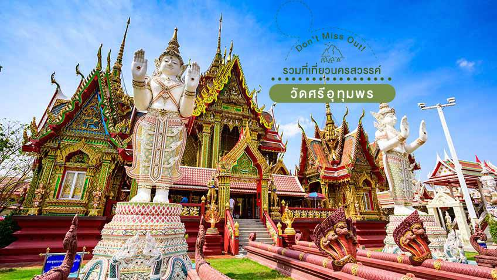
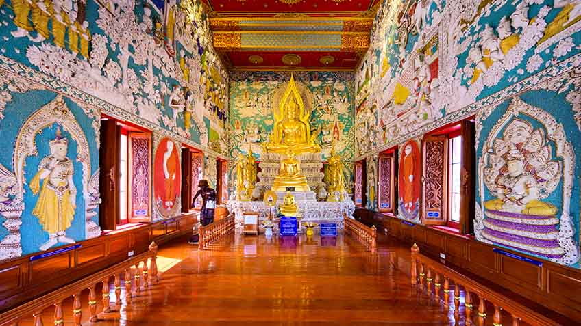
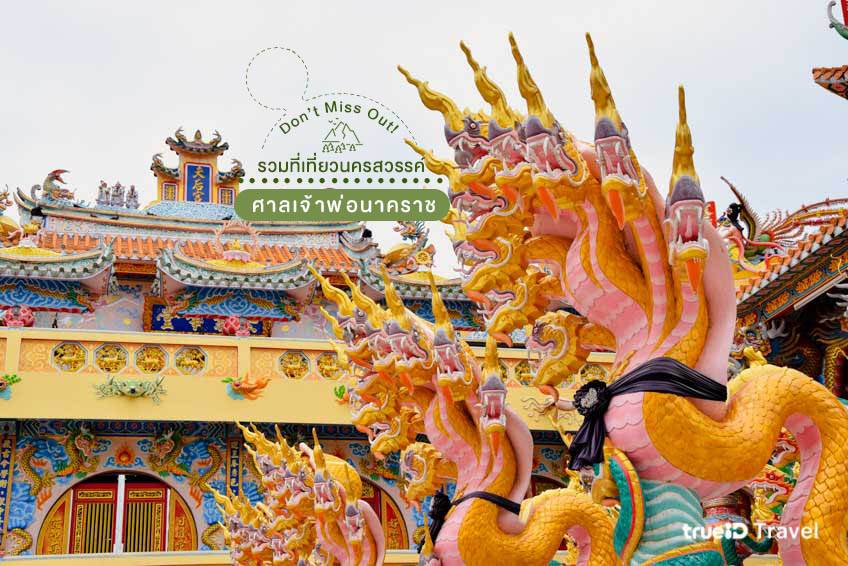
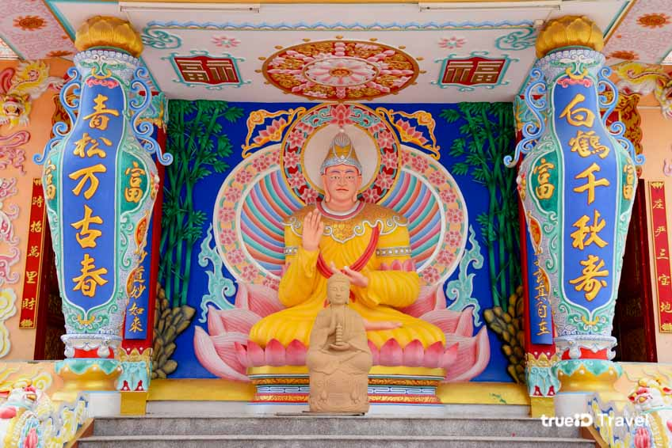

1 อุทยานสวรรค์
  อุทยานสวรรค์ สวนสาธารณะขนาดใหญ่ของจังหวัดนครสวรรค์ ตั้งอยู่บนถนนวงค์สวรรค์
เรียกได้ว่าเป็นปอดกลางเมือง มีพื้นที่ถึง 314 ไร่ โดดเด่นด้วยมังกรสวรรค์ตัวใหญ่
รายล้อมด้วยมังกรตัวเล็ก 4 ตัว บนฐานวงกลม มีศาลาจีน 4 หลัง ล้อมรอบ มีเกาะกลางน้ำมีสะพานเชื่อมต่อเกาะ
บนเกาะเป็นลานอเนกประสงค์
2 พาสาน
  พาสานเป็นเเลนมาร์คเเห่งเมืองนครสวรรค์ที่ไม่ควรพลาด ตั้งอยู่รหว่างเเม่น้ำปิงเเละเเม่น้ำน่าน บริเวณเเหลมเกาะยม
ต้นเเม่น้ำเจ้าพระยา ด้วยสถาปัตยกรรมที่เเปลกตา มีความคดเคี้ยวทันสมัย
ได้รับเเรงบันดาลใจผสมผสานระหว่างเเม่น้ำ 4 สาย คือ
3 บึงบอระเพ็ด
  บึงบอระเพ็ด บึงทะเลสาบน้ำจืดที่มีขนาดใหญ่ที่สุดในไทย และเป็นถิ่นอาศัยของนกนานาชนิด
โดยเฉพาะในช่วงฤดูหนาวนั้น จะมีนกอพยพเดินทางเข้ามาอาศัยในบริเวณนี้กันอย่างมากมายเลยค่ะ
ที่ บึงบอระเพ็ดแห่งนี้ จะมีเนื้อที่ 132,737 ไร่
ครอบคลุมพื้นที่ทั้งหมด 3 อำเภอ ได้แก่ อำเภอเมืองนครสวรรค์ อำเภอท่าตะโก และอำเภอชุมแสง
4 วัดศรีอุทุมพร
 วัดศรีอุทุมพร วัดสวย นครสวรรค์ ที่สายบุญต้องแวะไปสักการะกันสักครั้ง เพราะที่นี่เป็นวัดที่ชาวนครสวรรค์ให้ความเคารพศรัทธาเป็นอย่างมาก เนื่องจากเป็นวัดที่ หลวงพ่อจ้อย เกจิอาจารย์ชื่อดัง แห่งเมืองปากน้ำโพ เป็นอดีตเจ้าอาวาสก่อนที่ท่านจะละสังขารไปนั่นเอง
5 ศาลเจ้าพ่อนาคราช
 วัดศรีอุทุมพร วัดสวย นครสวรรค์ ที่สายบุญต้องแวะไปสักการะกันสักครั้ง เพราะที่นี่เป็นวัดที่ชาวนครสวรรค์ให้ความเคารพศรัทธาเป็นอย่างมาก เนื่องจากเป็นวัดที่ หลวงพ่อจ้อย เกจิอาจารย์ชื่อดัง แห่งเมืองปากน้ำโพ เป็นอดีตเจ้าอาวาสก่อนที่ท่านจะละสังขารไปนั่นเอง